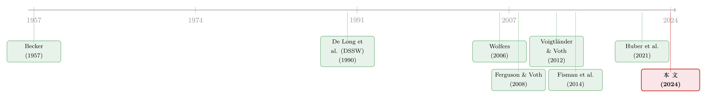

J'Accuse！——当反犹主义涨落时，股市替我们记下了人心
本文读的是 Do, Galbiati, Marx & Ortiz Serrano (2024, Journal of Financial Economics)：在 19 世纪末法国「德雷福斯事件」期间，董事会里有犹太裔成员的上市公司，先在反犹浪潮里跌了一跤，又在左拉发表《我控诉！》之后的两年里跑赢大盘——押注这些「犹太关联股」的投资者，赚到了相当于这些公司市值 14.1%、相当于全市场 7.9% 的超额租金。作者据此论证：偏见本身会被定价，而偏见的退潮，是可以被「买」下来的。
1 一桩冤案，为什么会留在股价里
先抛一个看似古怪的问题：一个人是不是清白，按理说该由法庭来裁断；可如果连法庭都错了，社会的「集体良心」要花多久才肯纠正？又有谁，会在这场漫长的纠错里替我们记账？
历史学家会告诉你，答案藏在卷宗、报纸、街头集会里。但这篇论文给出的答案出人意料——藏在巴黎证券交易所的股价里。
1894 年，法国犹太裔军官阿尔弗雷德·德雷福斯（Alfred Dreyfus）被诬以叛国罪，在万众围观下被「军事降级」，流放魔鬼岛。四年后的 1898 年 1 月 13 日，作家左拉（Émile Zola）在《震旦报》（L'Aurore）头版发表那封后来人人传诵的公开信《我控诉！》（J'Accuse...!），把这桩冤案的来龙去脉公之于众，掀起了要求平反的舆论运动。这是欧洲史上的一座里程碑——它恰好也发生在现代金融市场的婴儿期。
于是作者问了一个金融学家才会问的问题：当整个社会的反犹情绪先涨后落，那些「沾了犹太关系」的公司股票，会不会也跟着先跌后涨？ 如果会，那这条价格曲线，就等于给「偏见」这件看不见、摸不着的东西，标了一个真金白银的价钱。
这正是全文反复要讲透的那「一个核心」：反犹主义不是一种恒定不变的「存量」，它会在某些事件的刺激下被瞬间「激活」或「消退」；而金融市场，是捕捉这种短期涨落、并量化其经济后果的理想实验室。
2 数据：把一座 19 世纪的交易所重新拼起来
要回答这个问题，第一道关卡是数据——而 1890 年代的法国并没有 CRSP、没有 Compustat。
作者的办法是「手工考古」。他们从档案中手工收集了 1891–1899 年间巴黎上市公司的股票回报与董事会构成。接着，最关键的一步：怎么界定一家公司「有没有犹太关系」？这里他们借用了历史学家 Grange (2016) 那部关于巴黎犹太大资产阶级家族的家谱学（genealogy）巨著，按董事姓名比对家谱，识别出董事会里的犹太裔成员。一家公司只要董事会里坐着至少一位犹太裔董事，就被标记为「犹太关联公司」（Jewish-connected firm），进入处理组（treatment）；其余进入对照组（control）。
这种「用姓名识别族裔」的思路，在歧视研究里是一条成熟的方法论暗线——从 Kumar et al. (2015) 用「中东味」的基金经理姓名，到 Jung et al. (2019) 用姓氏的「悦耳程度」，研究者一直在想办法把「身份」变成一个可观测的变量。本文的特别之处在于，它面对的是一段连数据库都不存在的历史。
接着，作者把九年的时间轴按「事件」切成几段。1892 年底的巴拿马丑闻（Panama scandal）是德雷福斯事件的前奏；1895 年 1 月的降级仪式、1898 年 1 月的《我控诉！》、1899 年 6 月瓦尔德克–卢梭（Waldeck-Rousseau）组阁、1899 年 9 月的总统特赦，则是事件本身的几个节点。这些日期，后面就成了识别的「楔子」。
3 识别策略：事件研究 + 双重差分，再加两道保险
怎么从这堆股价里「读」出反犹情绪的因果效应？作者用的是一套层层加固的组合拳。
首先，是标准的事件研究（event study）。围绕每一个反犹「冲击事件」，他们计算犹太关联公司的累积异常回报（cumulative abnormal returns, CAR）。结果是：在巴拿马丑闻首次爆料之后、以及德雷福斯被降级之后，犹太关联公司都经历了负的 CAR。耐人寻味的是，《我控诉！》本身在短期内的效应是负的、但估计得不精确（imprecisely measured）——这一点稍后会变成全篇的「反转」伏笔。而在瓦尔德克–卢梭组阁（公开释放了德雷福斯即将平反的信号）前后，犹太关联公司出现了正的 CAR。
接着，一个自然的问题是：事件窗口太短，会不会只是噪声？于是作者把镜头拉长，改用双重差分（difference-in-differences, DiD），比较犹太关联公司与其他公司在事件不同阶段的回报差异。他们的首选设定（preferred specification）把时间分成三段：
- 参照期：
1891年 1 月 –1894年 10 月（事件爆发前）； - 第一阶段（高反犹情绪期）：
1894年 11 月 –1898年 1 月（从德雷福斯案公开到《我控诉！》前夕）； - 第二阶段（反犹退潮期）：
1898年 1 月之后（《我控诉！》之后的平反运动期）。
DiD 的好处在于，它把「犹太关联公司本来就和别的公司不一样」这种时间不变的差异给差掉了，从而保证结果不是由犹太关系的某个固定相关因素驱动的。
然后，结果浮出水面：犹太关联公司在第一阶段经历了相对的、但估计不精确的回报下滑；而在平反的第二阶段，则出现了更明显的回报增长。前者「不精确」，作者解读为——当事件爆发时，法国社会的反犹情绪本就处在高位（一大批历史文献，从 Lazare (1894) 到 Arendt (1951)，都支持这一点），所以「再坏一点」的边际冲击有限；而后者的大幅上涨，才是真正的新信息。
但真正关键的一步在于，作者并不满足于 DiD 的「平行趋势」假设能不能站住。他们额外上了两道保险：
- 一是合成双重差分（synthetic difference-in-differences, SDID），即 Arkhangelsky et al. (2021) 的估计量。它会自动给对照组的事前观测找一组最优权重，把处理组和对照组的事前趋势「对齐」，再用对齐后的趋势差识别事后效应——专门用来对付平行趋势可能被违反的担忧。
- 二是粗化精确匹配（Coarsened Exact Matching, CEM），即 Iacus et al. (2012) 的方法。当一些事前可观测变量在两组间不平衡时，CEM 通过在「层」（strata）内精确匹配来压低协变量失衡，降低它们污染处理效应的风险。
两道保险之下，核心结论都没有翻车。
4 反转：偏见的退潮，能被「买」下来
现在，把镜头对准全文最重要的那个数字。
作者计算了《我控诉！》之后两年里，持有犹太关联股票的投资者相对全市场赚到的「租金」（rents）：相当于犹太关联公司总市值的 14.1%，相当于整个市场市值的 7.9%。
这是一个不小的量级。更重要的是它的方向——反转出现了。一桩冤案最黑暗的时刻（降级、流放）压低了这些股票；而正义开始回归的时刻（《我控诉！》掀起平反），却把它们抬了起来。换句话说，谁要是在 1898 年初赌一把「法国社会的良心终将苏醒」、重仓买入犹太关联股，谁就能在随后两年里跑赢大盘。
一个直接的反驳是：这些股票的波动率（volatility）确实也上升了，会不会高回报只是高风险的补偿？作者的回答很干脆——犹太关联公司的风险调整后回报（risk-adjusted returns）在《我控诉！》之后同样上升了。换句话说，投资者拿到的，远超过他们为多承担的那点风险所应得的补偿。这正是「偏见创造了可被套利的租金」这一论断的实证支点。
那么，这究竟是不是因为投资者真的相信「平反会让这些公司更赚钱」？这是必须排除的头号竞争性解释。作者给了三条干净的证据：
- 盈利没变。用股息（dividends）衡量的实际盈利能力，整个时期内相对其他公司没有变化——故事不是基本面的故事。
- 海外经营的公司也涨了。那些主要在国外开展业务、因而较少受法国公众或国家「秋后算账」威胁的犹太关联公司，在平反阶段同样经历了更高的回报。如果驱动力是「国内政治风险下降」，这批公司本不该有反应。
- 董事会没换人。公司并没有为了应对事件而改组董事会；董事会构成主要由公司的所有权结构决定，不会随事件的潮起潮落而调整——所以处理组的「身份」是外生于事件的。
三条证据合起来，把「基本面预期变化」这条路堵掉了一大半。剩下的解释，指向一个更微妙的机制：是投资者的「信念」本身在变。
（关于「歧视如何渗进金融决策的细枝末节」，本博客另有一篇相关的讨论，见《讨好你的人，凭什么先被欠款？——藏在付款顺序里的歧视》。）
5 模型：把「三种偏见」装进噪声交易者的定价公式
为了把这套「信念驱动价格」的逻辑讲清楚，作者搭了一个理论框架——它建立在 De Long, Shleifer, Summers & Waldmann (1990)（业内常简称 DSSW）那个经典的噪声交易者（noise trader）模型之上。
设定。市场上有两类风险厌恶（risk-averse）的投资者：
- 中性投资者（neutral investors），持有无偏的信念；
- 反犹投资者（antisemitic investors），对犹太股票持有不确定的、负向偏误的信念，对非犹太股票则持有正向偏误的信念。
关键的洞见是：因为投资者风险厌恶、而且持有被歧视股票的数量不受「零」的下界约束（这点和劳动力市场里「干脆不雇佣少数族裔」的隔离逻辑截然不同），所以每个人都会同时持有一些犹太与非犹太股票。于是，一旦偏见的分布发生变化，所有投资者都要重新优化自己的组合，从而撬动均衡价格。
在这个框架里，犹太股票的价格受到三个来源的压制：
- (i) 信念中的基础性反犹偏误（fundamental biases）——它持久地压低股价；
- (ii) 作用在这些偏误上的特异性冲击（idiosyncratic shocks）——它的效应短暂；
- (iii) 围绕反犹投资者信念的不确定性（uncertainty）——它进一步压低了对犹太股票的需求。
这三者，恰好可以「挂」到 DSSW 那个著名的定价公式上。DSSW 给出的风险资产价格（在他们的符号下）为：
$$ p_t = 1 + \frac{\mu(\rho_t - \rho^{*})}{1+r} + \frac{\mu\rho^{*}}{r} - \frac{(2\gamma)\,\mu^{2}\sigma_{\rho}^{2}}{r(1+r)^{2}} $$
其中 \(\rho_t\) 是噪声交易者当期的误判，\(\rho^{*}\) 是误判的均值，\(\mu\) 是噪声交易者占比，\(\gamma\) 是风险厌恶系数，\(\sigma_{\rho}^{2}\) 是误判的方差，\(r\) 是无风险利率。下面把最核心的三项拆开看：
这套映射的妙处在于：它把「反转」讲圆了。 《我控诉！》一发表，短期内反而加剧了社会信念的两极分化，抬高了 \(\sigma_{\rho}^{2}\)（对反犹偏误的不确定性），所以犹太股票短期内被进一步压低——这正对上了事件研究里「《我控诉！》短期效应为负」的发现。但与此同时，《我控诉！》点燃的平反运动，长期里降低了 \(\rho^{*}\)（基础偏误的均值）、也降低了 \(\sigma_{\rho}^{2}\)（不确定性）。两条都指向同一个方向：犹太股票在长期里持续升值。
这一步在思想上接续了 Becker (1957) 关于「品味型歧视」（taste-based discrimination）的经典分析：歧视会创造出可被「非歧视者」攫取的租金。但本文模型相比劳动力市场版本，多了两样东西——不确定性与风险厌恶。正因为偏见的未来走向不确定，套利「赌偏见退潮」本身就是有风险的；这也解释了为什么犹太股票的价格没有在事件结束后立刻收敛到基本面价值——套利是慢的，因为它担着 \(\sigma_{\rho}^{2}\) 那份险。
6 文献脉络：从「歧视有没有成本」到「偏见能不能被定价」
把这篇论文放回它所在的那条研究长河里，会看得更清楚。
最早的源头，是 Becker (1957) 的《歧视经济学》。他第一个把「品味型歧视」写成模型，指出歧视者要为自己的偏好付出代价，而市场会奖励那些不带偏见的人——这埋下了「歧视创造租金」的种子。半个多世纪后，Wolfers (2006) 用 CEO 性别与股票回报，直接检验了「不带偏见的投资者能否靠『反向押注歧视者』跑赢市场」这一长期假说。本文，正是这条线在族裔偏见与历史金融市场上的延伸。

另一条并行的支流，是「族裔/民族偏好如何扭曲投资与企业价值」。Fisman et al. (2014) 发现中日关系恶化拖累了卷入双边贸易的公司股价；Kumar et al. (2015) 发现 9·11 后流向「中东味姓名」基金经理的资金下降；Hjort et al. (2019) 则在肯尼亚发现族裔歧视压低了上市公司的价值创造。这些工作大多聚焦歧视的效率后果，却较少触及「歧视如何为另一些投资者创造盈利机会」。本文恰好补上了这一块。
还有一条更厚重的暗线，是「反犹主义的经济根源与后果」。Voigtländer & Voth (2012) 证明了反犹暴力可以跨越六个世纪持续；Ferguson & Voth (2008) 给纳粹德国的政治关联标了价；Doerr et al. (2019) 发现一家犹太主席掌舵的银行倒闭后、当地纳粹得票上升；Huber et al. (2021) 则研究了纳粹德国大规模驱逐犹太经理人的后果。但这些研究里的反犹，往往伴随着结构性的制度变迁与政府歧视的现实威胁。本文的独特位置在于：德雷福斯事件里的犹太关联公司，既没有经历结构性变化，也不面临政府歧视的现实前景（第三共和国从未真正推行反犹政策）——这让作者得以「干净」地分离出情绪本身的涨与落，而且既能研究反犹的负向冲击，也能研究它的正向消退。
7 评论与延伸（Q&A + 研究方向）
(a) 几个可能的疑问
Q：这跟「政治关联价值」的研究（比如 Ferguson & Voth）到底有什么不同？
政治关联研究问的是「认识对的人值多少钱」，处理的是企业与权力的实质纽带；本文问的是「社会对一个族裔的偏见涨落，如何反映在与该族裔有关联的企业股价上」，处理的是投资者的信念。前者的价值会随政权更替而实打实地兑现或蒸发，后者则可以在基本面（股息、董事会）完全不动的情况下，仅凭情绪潮汐起落——这也正是本文要努力证明的。
Q：用「姓名比对家谱」来识别犹太关系，会不会有大量误判？
这确实是识别的软肋。但作者借的是 Grange (2016) 那部专门研究巴黎犹太大资产阶级家族的家谱学权威著作，比单纯「听起来像犹太姓」要严谨得多。更重要的是，董事会构成在整个事件期间基本不变，所以即便存在分类噪声，它也是时间不变的，会被 DiD 差掉，主要影响是稀释（attenuate）估计、而非制造虚假的「先跌后涨」。
Q：《我控诉！》短期效应为负，长期为正——这不自相矛盾吗？
恰恰相反，这正是模型的精华。《我控诉！》在短期内激化了信念分歧、抬高了对反犹偏误的不确定性 \(\sigma_{\rho}^{2}\)，于是犹太股票短期被进一步压低；但它点燃的平反运动在长期里同时拉低了偏误均值 \(\rho^{*}\) 和不确定性 \(\sigma_{\rho}^{2}\)，于是长期升值。一个事件、两种时间尺度、两种相反的价格效应——这不是矛盾，是机制。
Q：14.1% 的「租金」是不是事后挑出来的幸运儿？
这是任何「跑赢大盘」叙事都要面对的质疑。作者的防线有三层：DiD 把固定差异差掉、SDID 处理平行趋势、CEM 处理事前失衡，三种方法下核心结论一致。再加上「风险调整后回报也上升」「海外经营公司同样上涨」「股息不变」三条横向证据，把「这只是补偿了更高风险」或「这只是基本面好转」的替代解释逐一削弱。当然，样本是单一国家、单一历史事件，外部有效性仍需谨慎。
Q：为什么价格没有在事件结束后立刻收敛到基本面？
因为套利「赌偏见退潮」本身是有风险的——你不知道未来 \(\sigma_{\rho}^{2}\) 会怎么走，偏见可能反扑（事实上 1930 年代它确实卷土重来）。在 DSSW 框架里，正是这种噪声交易者风险让理性套利者不敢满仓、价格因而缓慢收敛。这也是对「有效市场会瞬间纠错」这一直觉的一个历史注脚。
Q：这对「歧视者终将被市场淘汰」的乐观假说意味着什么？
它给了一个有条件的支持。市场确实奖励了「反向押注歧视者」的人（呼应 Wolfers, 2006），但奖励的兑现既缓慢又冒险。换言之，市场会惩罚偏见，但惩罚是滞后的、打过折扣的——偏见不会因为「不划算」就立刻消失。
(b) 几个可能的研究问题与提案
1. 把镜头从股票挪到「债」上：反犹情绪与公司债利差
【经济故事】股票价格混合了现金流与折现率两条信息，而公司债利差（credit spread）更直接地映射违约风险与风险溢价。如果偏见真的通过「需求/不确定性」渠道压低资产价格，那么犹太关联公司的借贷成本是否也在反犹高潮期被抬高、在平反期回落？这能把本文的「信念定价」推进到信用市场，并分离出「违约预期」与「风险溢价」两条腿。
【可行性】中。难点在 19 世纪法国公司债的二级市场报价稀疏；但巴黎交易所的债券挂牌与票息档案部分可考，可与本文同源的手工数据对接。识别仍可沿用事件研究 + DiD。
2. 外资持有人视角：海外投资者是不是「无偏」的边际买家？
【经济故事】本文已发现「海外经营」的犹太关联公司同样上涨。一个自然的延伸是：在反犹高潮期，外国投资者（不分担法国本土的反犹品味）是否系统性地增持了被本土投资者抛售的犹太关联股？若能观测到持有人国籍的变化，就能把 DSSW 模型里「中性投资者 vs. 偏见投资者」的两类人实证地区分开，而不只是停留在理论假设。
【可行性】低到中。19 世纪持有人层面的国籍数据极难获取，多半只能借助零星的股东名册或跨市场（伦敦/法兰克福同时挂牌）的价差间接推断。识别思路诚实地说很挑战，但「跨市场价差」是一条可行的近似。
3. 媒体语调的高频测量：把「亲德雷福斯 vs. 反德雷福斯」量成一个日度因子
【经济故事】作者已手工收集了五大报纸的报道，并指出回报由「亲德雷福斯报道」驱动、「反德雷福斯报道」反向。下一步可以把报纸语调用文本方法做成一个日度的情绪指数，检验它能否领先犹太关联股的回报，从而把「媒体放大偏见」这条因果链拧得更紧。
【可行性】高。报纸已数字化的部分不少，文本情绪打分是成熟技术；难点是历史法语 OCR 与语调词典的构建，但属工程问题，doable。
4. 偏见的「半衰期」：跨多次反犹事件估计冲击的衰减速度
【经济故事】本文给了「先跌后涨」的总体画像，但偏见冲击到底衰减多快？把巴拿马丑闻、降级、《我控诉！》、组阁、特赦等多个节点串成一个事件序列，估计每次冲击在 CAR 上的衰减曲线，就能直接量出模型里「特异性冲击」（来源 ii）相对「基础偏误」（来源 i）的相对时长。
【可行性】中。数据本文已具备，挑战在于多事件窗口相互重叠、需要小心处理污染窗口；可用局部投影（local projection）类方法缓解。
8 我的判断
这篇论文最让人佩服的，是它把一个看似无法量化的对象——社会偏见的短期涨落——硬生生地从 19 世纪的股价里「读」了出来，而且读得相当干净。「股息不变、海外公司同涨、董事会不动」这三条横向证据，几乎是逐一拆掉了「基本面预期变化」这个最难缠的竞争解释；而把 DSSW 噪声交易者模型的三项分别对应到「持久偏误 / 特异冲击 / 偏见不确定性」，则让「《我控诉！》短期为负、长期为正」这个乍看矛盾的事实变得自洽。这是把实证与理论扣得很紧的一篇范本。
对识别，我仍有两点保留。其一，处理组的认定终究依赖单一家谱来源的姓名比对，分类误差虽多半只会稀释估计、但若误差与某些行业或规模系统相关，DiD 未必能完全吸收。其二，「租金 14.1%」是单一国家、单一历史事件下的估计，事件期内市场极薄、流动性差，异常回报的统计精度（注意《我控诉！》的短期效应作者自己也承认「估计不精确」）使得点估计的外部有效性需要谨慎对待——这更像是一个存在性证明：偏见会被定价、偏见的退潮可以被买下来，而非一个可外推的精确弹性。
后续我最想看到的，是把这套逻辑搬到有持有人国籍/类型微观数据的现代样本上——比如某次针对特定族裔或国别的舆论冲击前后，究竟是哪一类投资者在买、哪一类在卖。本文在理论上区分了「中性」与「偏见」两类投资者，但在历史数据里只能间接推断；谁能把这两类人实证地抓出来，谁就能给「偏见定价」这件事，钉上最后一颗钉子。
参考文献
- Arendt, H. (1951). The Origins of Totalitarianism. Meridian Books.
- Arkhangelsky, D., Athey, S., Hirshberg, D. A., Imbens, G. W., & Wager, S. (2021). Synthetic Difference-in-Differences. American Economic Review 111(12), 4088–4118.
- Becker, G. (1957). The Economics of Discrimination. University of Chicago Press.
- De Long, J. B., Shleifer, A., Summers, L. H., & Waldmann, R. J. (1990). Noise Trader Risk in Financial Markets. Journal of Political Economy 98(4), 703–738.
- Do, Q.-A., Galbiati, R., Marx, B., & Ortiz Serrano, M. A. (2024). J'Accuse! Antisemitism and Financial Markets in the Time of the Dreyfus Affair. Journal of Financial Economics 154, 103809.
- Doerr, S., Gissler, S., Peydró, J.-L., & Voth, H.-J. (2019). From Finance to Fascism: The Real Effect of Germany's 1931 Banking Crisis. CEPR Discussion Paper DP12806.
- Ferguson, T., & Voth, H.-J. (2008). Betting on Hitler—The Value of Political Connections in Nazi Germany. Quarterly Journal of Economics 123(1), 101–137.
- Fisman, R., Hamao, Y., & Wang, Y. (2014). Nationalism and Economic Exchange: Evidence from Shocks to Sino-Japanese Relations. Review of Financial Studies 27(9), 2626–2660.
- Grange, C. (2016). Une élite parisienne: les familles de la grande bourgeoisie juive (1870–1939). CNRS Édition.
- Hjort, J., et al. (2019). Ethnic Discrimination and Value Creation. （见正文引用）
- Huber, K., et al. (2021). Mass Dismissals of Jewish Managers in Nazi Germany. （见正文引用）
- Iacus, S. M., King, G., & Porro, G. (2012). Causal Inference without Balance Checking: Coarsened Exact Matching. Political Analysis 20(1), 1–24.
- Kumar, A., Niessen-Ruenzi, A., & Spalt, O. G. (2015). What's in a Name? Mutual Fund Flows When Managers Have Foreign-Sounding Names. Review of Financial Studies 28(8), 2281–2321.
- Lazare, B. (1894). L'antisémitisme: son histoire et ses causes. Paris: Chailley.
- Voigtländer, N., & Voth, H.-J. (2012). Persecution Perpetuated: The Medieval Origins of Anti-Semitic Violence in Nazi Germany. Quarterly Journal of Economics 127(3), 1339–1392.
- Wilson, S. (2007). Ideology and Experience: Anti-Semitism in France at the Time of the Dreyfus Affair. Liverpool University Press.
- Wolfers, J. (2006). Diagnosing Discrimination: Stock Returns and CEO Gender. Journal of the European Economic Association 4(2–3), 531–541.